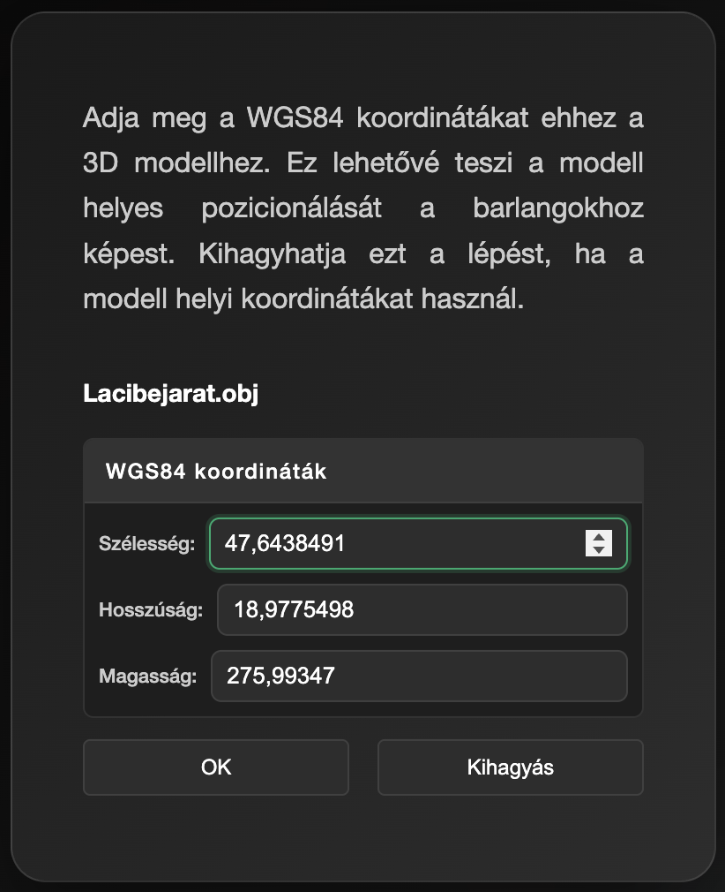
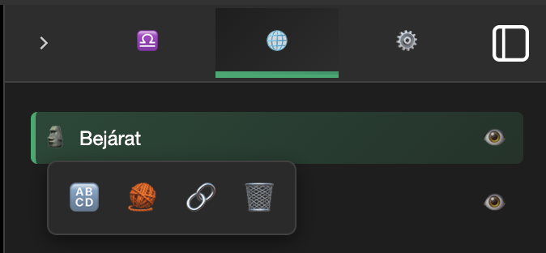
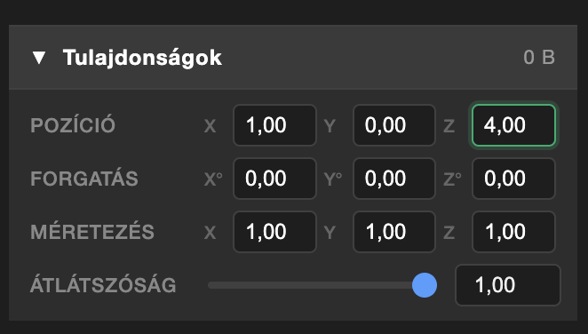
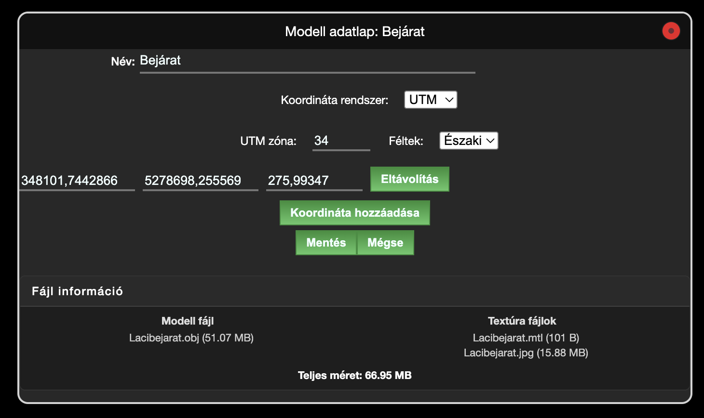

3D modellek kezelése
Áttekintés
A Speleo Studio támogatja 3D modellek importálását és kezelését. A 3D modellek lehetővé teszik felszíni modellek, barlangjáratok és egyéb 3D szkenneléssel készített objektumok megjelenítését a barlangok mellett. A modellek textúrákkal együtt is betölthetők.
Támogatott formátumok
- PLY (Polygon File Format) — pontfelhők és háromszöghálók
- OBJ (Wavefront OBJ) — háromszöghálók textúra támogatással
- LAS (ASPRS LAS 1.0–1.4) — LiDAR pontfelhők
- LAZ (tömörített LAS) — tömörített LiDAR pontfelhők
- MTL (Material Template Library) — anyag- és textúra definíciók OBJ fájlokhoz
- JPG, PNG — textúra képfájlok
3D modell importálása
1. lépés: Modell megnyitása
Kattintson a Fájl → Modell megnyitása menüpontra.
2. lépés: Fájlok kiválasztása
A fájl tallózó ablakban válassza ki a modell fájlt (.ply, .obj, .las vagy .laz). Ha a modellhez textúra fájlok is tartoznak (.mtl és képfájlok), azokat is kiválaszthatja egyszerre. A Speleo Studio automatikusan felismeri és alkalmazza a textúrákat.
3. lépés: Koordináták megadása (opcionális)
A modell megnyitásakor megjelenik egy koordináta ablak. Itt WGS84 koordinátákat (szélesség, hosszúság, tengerszint feletti magasság) adhat meg a modellhez. Ha az OBJ fájl tartalmaz beágyazott koordinátákat (például Scaniverse alkalmazással készült fájlok), azok automatikusan megjelennek az ablakban.
Ha a projektnek már van koordináta rendszere, a WGS84 koordináták automatikusan átkonvertálódnak a projekt koordináta rendszerébe (UTM vagy EOV), és a modell a barlanghoz képest helyesen pozícionálódik.
A Kihagyás gombra kattintva a modell koordináták nélkül nyílik meg. Ebben az esetben a modell a projekt fixpontjának pozíciójába kerül.

⚠️ Távolság ellenőrzés
Ha a modell koordinátái túl messze vannak a projektben lévő barlangoktól, a Speleo Studio figyelmeztetést jelenít meg és nem engedi megnyitni a modellt. Ez megakadályozza, hogy véletlenül rossz koordinátákkal nyissunk meg egy modellt és a nézetünk teljesen szétessen.
Nagy pontfelhők
A Speleo Studio nagy pontfelhőket (akár több tízmillió pont) is képes kezelni. Az első betöltésnél az alkalmazás feldolgozza a pontfelhőt, ami nagy fájloknál néhány másodpercet vehet igénybe. A következő megnyitásnál a betöltés szinte azonnali.
Ha a pontfelhő több pontot tartalmaz, mint a Max. betöltött pontok beállítás, az alkalmazás automatikusan ritkítja a pontokat a betöltéskor. Erről egy üzenet tájékoztatja a felhasználót.
Pontfelhő beállítások
A Beállítások → 3D modellek szekcióban konfigurálható:
- Pontfelhő pontméret: a megjelenített pontok mérete pixelben
- Pontfelhő szín: magasság alapú színátmenet a szín nélküli pontfelhőkhöz
Max. pontszám és Max. betöltött pontok — mi a különbség?
Ez a két beállítás különböző dolgokat vezérel:
| Max. betöltött pontok (millió) | Max. pontszám (millió) | |
|---|---|---|
| Mikor hat? | A fájl megnyitásakor | A megjelenítés során, minden képkockánál |
| Mit csinál? | Korlátozza, hogy a fájlból hány pont kerüljön betöltésre a memóriába. Ha a fájl több pontot tartalmaz, a pontok ritkítva lesznek. | Korlátozza, hogy egyszerre hány pont jelenjen meg a képernyőn. A kamera közelébe eső területek részletesebben, a távolabbi területek kevesebb ponttal jelennek meg. |
| Mire hat? | Memóriahasználat, betöltési idő | Képkocka sebesség (FPS), megjelenítési részletesség |
| Alapértelmezés | 20 millió | 2 millió |
Példa: Ha egy 50 milliós pontfelhőt nyit meg 20 milliós betöltési limittel, a fájlból 20 millió pont kerül betöltésre. Ebből a 2 milliós megjelenítési limit miatt egyszerre csak ~2 millió pont jelenik meg a képernyőn, a kamera pozíciójától függően.
Modell böngésző
Az importált 3D modellek a Modellek fülön jelennek meg az oldalsávban. Minden modell egy listaelem, amelyen a következő műveletek végezhetők:
- Bal kattintás: Modell kiválasztása — megjelenik a tulajdonságok panel
- Jobb kattintás vagy ⋮ menü gomb: Helyi menü megnyitása a következő opciókkal:

Helyi menü (jobb kattintás)
| Ikon | Művelet | Leírás |
|---|---|---|
| 🔠 | Modell adatlap | Koordináta rendszer, koordináták és név szerkesztése, fájl információk megjelenítése |
| 🧶 | Textúrák betöltése | MTL és textúra fájlok utólagos betöltése |
| 🔗 | Beágyazás / Beágyazás megszüntetése | Modell beágyazása a projektbe exportáláshoz |
| 🗑️ | Modell törlése | Modell és kapcsolódó textúrák törlése |
Láthatóság
A modell neve mellett található szem (👁️) ikonra kattintva a modell láthatósága kapcsolható. Ez hasznos, ha több modell van betöltve és csak bizonyos modelleket szeretnénk látni.
Tulajdonságok panel
A modell kiválasztásakor (bal kattintás) megjelenik a tulajdonságok panel az oldalsáv alján. Itt módosíthatók a modell megjelenési tulajdonságai:
| Tulajdonság | Leírás |
|---|---|
| Pozíció (X, Y, Z) | A modell pozíciója a 3D térben |
| Forgatás (X, Y, Z) | A modell forgatása fokban az adott tengely körül |
| Méretezés (X, Y, Z) | A modell méretezése (nagyítás / kicsinyítés) az adott tengely mentén |
| Átlátszóság | A modell átlátszósága (0 = teljesen átlátszó, 1 = teljesen látható) |
A módosítások automatikusan mentődnek és a projekt újranyitásakor visszaállítódnak.

4x4 Transzformációs mátrix
A tulajdonságok panel fejlécében, a fájlméret mellett található egy kis mátrix ikon (

). Erre kattintva megnyílik egy párbeszédablak, ahol egy 4×4-es transzformációs mátrixot lehet beilleszteni, például CloudCompare-ből vagy más 3D szoftverből.A mátrix egyszerre tartalmazza a pozíciót (eltolás), a forgatást és a méretezést. Az alkalmazás automatikusan felbontja ezeket az összetevőket és alkalmazza a modellre. A párbeszédablak megnyitásakor a jelenlegi transzformáció jelenik meg mátrix formában, így az könnyen másolható más alkalmazásba is.
Mátrix formátum
A mátrix 4 sorból és 4 oszlopból áll, az értékek szóközzel, tabulátorral, vesszővel vagy pontosvesszővel
elválaszthatók. Az utolsó sornak 0 0 0 1-nek kell lennie (affin transzformáció).
Példa (15°-os forgatás a Z tengely körül, 10.5 és -3.2 eltolással):
0.9659 -0.2588 0.0000 10.5000 0.2588 0.9659 0.0000 -3.2000 0.0000 0.0000 1.0000 0.0000 0.0000 0.0000 0.0000 1.0000
Modell adatlap
A modell adatlap (🔠 ikon a helyi menüben) lehetővé teszi a modell részletes beállításait:
Név
A modell megjelenített neve módosítható. Ez nem változtatja meg a fájl nevét, csak a megjelenített nevet.
Koordináta rendszer
A modell adatlapon beállítható a modell koordináta rendszere (EOV, UTM vagy nincs). A koordináta rendszer kiválasztása után megadhatók a modell koordinátái. Ez lehetővé teszi a modell pontos pozícionálását a barlangokhoz képest.
Fájl információk
Az adatlap alján megjelennek a modellhez tartozó fájlok és azok méretei:
- Modell fájl: Az OBJ vagy PLY fájl neve és mérete
- Textúra fájlok: Az MTL és képfájlok nevei és méretei
- Teljes méret: Az összes fájl összesített mérete

Modell beágyazása
Alapértelmezetten a 3D modellek nem kerülnek bele az exportált projekt fájlba, mivel a modellek fájlmérete nagyon nagy lehet (akár több száz MB). A modell beágyazásával (🔗 ikon a helyi menüben) a modell és a hozzá tartozó textúrák bekerülnek az exportált projekt fájlba.
Beágyazás jellemzők
- A beágyazott modellek a modell böngésző listában 🔗 ikonnal jelöltek
- Ha a modell mérete meghaladja az 5 MB-ot, megerősítést kér a beágyazás előtt
- Beágyazott modelleket tartalmazó projekt
.json.gz(tömörített) formátumban exportálódik - Beágyazás nélküli projektek egyszerű
.jsonformátumban exportálódnak - A beágyazás bármikor megszüntethető a helyi menüből
Modellek és barlangok együttes használata
A Speleo Studio lehetővé teszi barlangok és 3D modellek egyidejű megjelenítését ugyanabban a projektben. Ha a barlang és a modell is rendelkezik koordinátákkal, automatikusan a megfelelő pozícióba kerülnek egymáshoz képest.
Koordináta rendszer kezelés
- Ha a projektben már van barlang koordináta rendszerrel (UTM vagy EOV), a modell WGS84 koordinátái automatikusan átkonvertálódnak a meglévő koordináta rendszerbe
- Ha a projektben nincs koordináta rendszer és a modellnek vannak WGS84 koordinátái, a projekt koordináta rendszere UTM-re áll be a WGS84 → UTM konverzió után
- Ha a modellnek nincsenek koordinátái (kihagyva), a modell a projekt fixpontjának pozíciójába kerül
Textúrák utólagos betöltése
Ha egy OBJ modellt textúra nélkül nyitott meg, a textúrákat utólag is betöltheti:
Textúra betöltése
1. Kattintson jobb egérgombbal a modellre a modell fában
2. Válassza a 🧶 Textúrák betöltése menüpontot
3. Válassza ki az MTL és képfájlokat a fájl tallózóban
4. A textúrák automatikusan alkalmazódnak a modellre